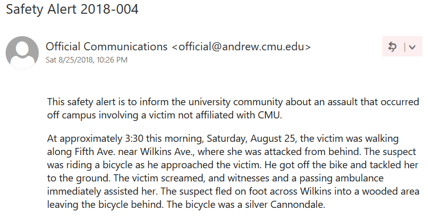
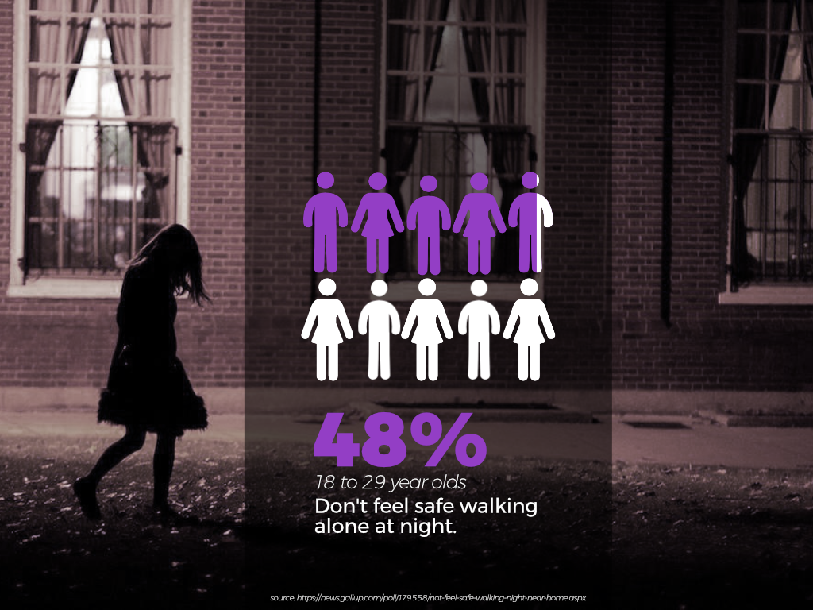
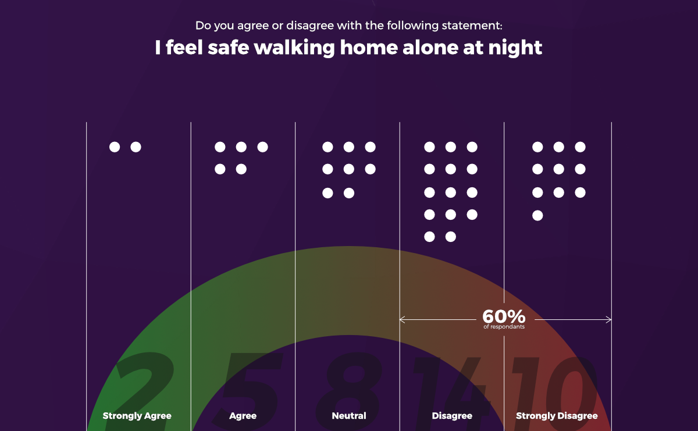
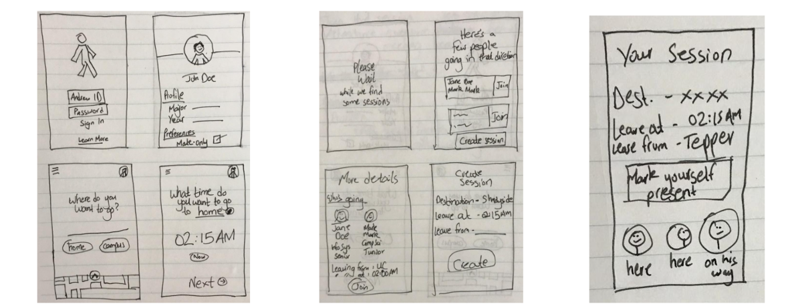
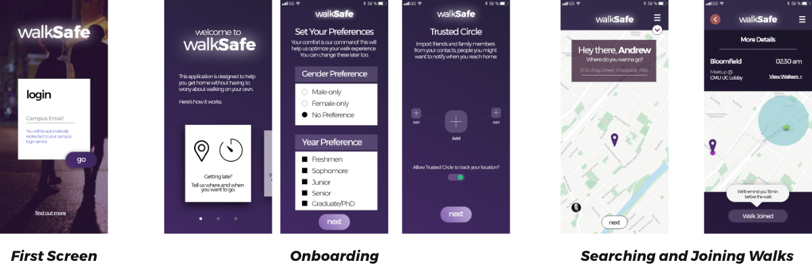

HomeSafe
Over a period of 4 months, I worked in a team to design a campus safety mobile application for students at the Carnegie Mellon campus in Pittsburgh. As the Design Lead for this project, I worked with my team to incorporate research and user-testing results in order to create a high-fidelity, semi-interactive prototype of this application on Adobe XD.
View Interactive PrototypeRole
Design Lead
Date
Sep 2018 - Dec 2018
Client
Carnegie Mellon University
Context
In spending two years at the Carnegie Mellon University in Qatar, I had gotten used to the safe environment that the campus presented. On any given moment in time, one could expect to find expensive laptop computers and mobile phones lying around in the cafeteria, with owners nowehere in sight. It was a comfort I had gotten used to, the comfort of not having to worry about the safety of my posessions nor myself.
So imagine my surprise, when I travel to the Carnegie Mellon campus in Pittsburgh to spend a semester abroad, and I find myself being greeted by the following email:

The culture shock hit me in a way I never expected. Upon befriending a few individuals on campus, I discovered that instances like these were nothing but ordinary, and with the amount of emails like this one I recieved over the course of the semester, I understood the implications these issues brought with them.
The Problem
For most students, hearing about the security incidents would lead to a lack of spending time on campus late at night. Those who would choose to partake, would usually spend the night on campus. This obviously took away opportunities for students, especially those that resided off campus to become unable to use campus resources when trying to study/work at home which resulted in a lack of productivity and efficiency.
Unfortunately, the students at my campus weren't the only ones who faced issues of campus security and safety. After carrying out my own research into the matter, I found some pretty alarming stats and figures.

As someone who spent most of his undergraduate life in an extremely safe, carefree environment, I wanted to explore the possibility of a solution that could help students elsewhere worry less about their personal safety when having to stay on campus at night. In fact, some would go on to say that leaving issues such as security unattended could result in the waste of the talents of over thousands of bright-minded individuals. So I got together with a few other students, and started to look into how we could work out a solution to this issue.
The Process
Initial Research
We started by looking into gathering data to confirm our hypothesis: students at Carnegie Mellon felt unsafe walking home at night. We carried out our initial explatory research by approaching a random sample of students, and asked them whether they agreed or disagreed with the statement that they felt safe walking home at night. Out of 40 students, 24 indicated that they disagreed or strongly disagreed with the statement.

60% of the respondents we surveyed indicated that they either disagreed or strongly disagreed with the statement. This confirmed our intial hypothesis, that the problem of campus security is something that exists for students of Carnegie Mellon. The next step was to find out ways students currently dealt with the security issues. Through research we discovered three major solutions students currently used to minimize the risk of incidents:
- Walking home with a friend.
- Calling or texting friends/family during their walk.
- Taking an Uber/Lyft home instead of walking.
Of the people surveyed, around 52% responded with the first option. This presented us with a possible direction that we could follow in the development of our solution. We proceeded to delve further into the notion of walking home with a friend, or more generally, a trusted individual. In a survey we carried out, over 85% respondents indicated they would feel safe walking home with another individual rather than walking alone.
Ideation
We started exploring the idea of a solution that focuses on students walking home with other individuals, preferably those who they know or can trust. After hours of ideation and brainstorming, we decided to work on a digital solution in the form of a mobile application, that essentially would allow students to walk home with other students. By incorporating campus authentication systems, we would be able to verify the identity of the students that use this app in order to tackle the element of trust.
The main idea of this app, initially titled walkSafe, would be to find someone to walk home with, late at night. The application would aid in looking for individuals who lived in a certain neighborhood, and thus a student could essentially walk home late at night with someone who lived close to them.
We began by creating a user flow of this application, and developed initial paper wireframes in order to understand the user process

Design
After translating the paper wireframes into low fidelity wireframes on Balsamiq, we carried out some initial user testing to see how students would respond to the applications. Perhaps the hardest part about this project was the design of the application. In our testing of the wireframes, whilst we did recieve positive feedback regarding the idea and the utility that it would present to the student, our main critiques had to do with the user experience of the application itself in order to have user retention. As the design lead, I chose Adobe XD as my interface design tool, and developed an initial set of wireframes in order to carry out further user testing.

Over a period of four months, we carried out rapid prototyping based on the user testing we did. There were three major points where we had to change the design in order to either improve the UX or incorporate new features.
1) Onboarding
In our user testing of the first mid-fi prototypes we developed, we found that the onboarding process took a rather long time for the user, which proved to be rather cumbersome, especially if someone downlaods the application late at night on campus and is expecting to quickly find someone to walk home with. From this insight, I ended up reducing the onboarding screens by moving the initial introduction application to a "Find More" link at the bottom of the login screen, and moved the preference setting to a sidebar post-onboarding instead.
2) Chat Feature
The second major feature we added to the application was to add a chat feature. This feature was added to the application, and was accessible after a walk was created in order to communicate with the group of students and inform them of any changes in pickup location or if anyone had to remove themself from the walk group.
3) Pivot to HomeSafe
Perhaps the most important part of this entire project was the decision to pivot our application from being more than just an application that forms "walk groups", to a platform where students are more free to choose their own mode of transport. This change occurred when a user test participant suggested the idea of sharing an Uber/Lyft instead of walking home. We believed that this could be a key feature of the application, as it would not only provide the option for an even safer journey back home, but would also allow the students to split ridesharing fares and get home faster. This was the most significant pivot we made, and a very successful one. In our user testing after this change, our likely-to-use-again figures jumped manyfold, and we recieved various requests to develop this application rather than just leaving it as a semi-functional prototype.
Conclusion
As my first ever product design project, I was very pleased with the outcome. I got to get my hands dirty with new tools such as Adobe XD (my current favorite UI Design software), and harness my creative problem solving to attempt to solve a problem that many individuals face on a daily basis. I was particularly pleased with the UX and UI of the prototype, for which we ended up as runner-ups for a Deloitte Innovation Award for Best User Experience. My three main takeaways for this project were:
- DO NOT underestimate the power of research and data.
- DO NOT be afraid to pivot and make necessary changes, even if it could mean flipping the entire idea on its head.
- DO take part in various other roles in the design process. Product strategy is just as important as the product design.